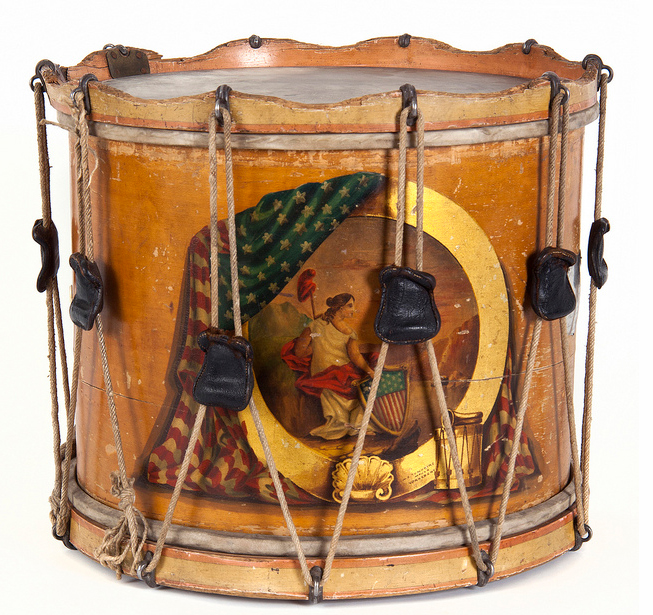
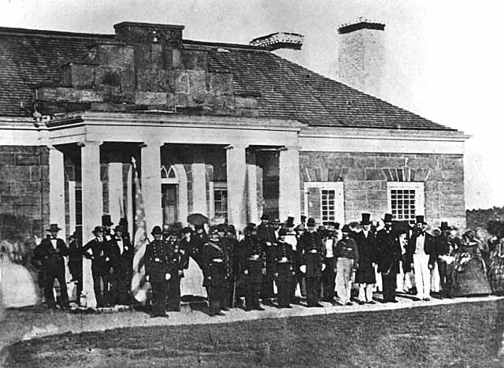
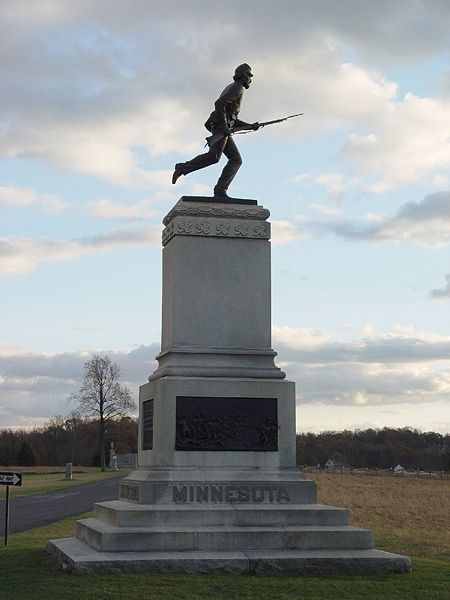

|
"What regiment is this?" "First Minnesota," replied Colvill.
"Charge those lines! commanded Hancock. Every man realized
in an instant what that order meant, -death or wounds to us
all, the sacrifice of the regiment to gain a.few minutes
time and save the position, and probably the battlefield,
-and every man saw and accepted the necessity for the
sacrifice, and, responding to Colvill's rapid orders, the
regiment, in perfect line, with arms at "right shoulder
shift " was in a moment sweeping down the slope directly
upon the enemy's centre. No hesitation, no stopping to
fire, though the men fell fast at every stride before the
concentrated fire of the whole Confederate force, directed
upon us as soon as the movement was observed Silently,
without orders, and, almost from the start, double-quick had
changed to utmost speed; for in utmost speed lay the only
hope that any of us would pass through that storm of lead
and strike the enemy. "Charge!" shouted Colvill, as we
neared their first line; and with leveled bayonets, at full
speed, we rushed upon it; fortunately, as it was slightly
disordered in crossing a dry brook at the foot of a slope.
The men were never made who will stand against leveled
bayonets coming with such momentum and evident desperation.
The first line broke in our front as we reached it and
rushed back through the second line, stopping the whole
advance. We then poured in our first fire, and availing
ourselves of such shelter as the low banks of the dry brook
afforded, held the entire force at bay for a considerable
time, and until our reserves appeared on the ridge we had
left. Had the enemy tallied quickly to a counter charge,
its great numbers would have crushed us in a moment, and we
would have made but a slight pause in its advance. But the
ferocity of our onset seemed to paralyze the for the time,
and although they poured upon us a terrible and continuous
fire from the front and enveloping flanks, they kept at
respectful distance from our bayonets, until, before the
added fire of our fresh reserves, they began to retire, and
we were ordered back. What Hancock had given us to do was
done thoroughly. The regiment had stopped the enemy, and
held back its mighty force and saved the position. But at
what sacrifice! Nearly every officer was dead or lay
weltering with blood wounds... The annals of war contain no
parallel to this charge. In its desperate valor, complete
execution, successful result, and in its sacrifice of men in
proportion to the number engaged, authentic history has no
record with which it can be compared. "
The previous quote was from William Lochren, a member of
the First Minnesota Volunteer Infantry. The quote was an
account of the 1st Minn.'s famous charge upon General
Wilcox's Alabama Brigade during the battle of Gettysburg.
Never before had such a small group faced such
insurmountable forces and accomplished what they set out to
do. The Civil War is the main event in the American
historical consciousness. While the Revolution of 1776
created the United States, the Civil War preserved this
creation as well as shaped and determined what kind of
nation the U.S. would be. The Civil War did this at the
cost of some six hundred and twenty thousand soldiers'
deaths. In the scope of this terrible carnage of the
volunteer armies of the Civil War few can match the
experiences and sacrifices incurred by the First Minnesota
Volunteer Infantry Regiment, In three years of service
|

A drum belonging to one of the drummer boys
of the 1st Minnesota
|
approximately twelve hundred in the First Minnesota fought
for the Union. Upon being mustered out in 1864 only three
hundred and twenty-five remained. In fact, the First
Minnesota sustained the highest casualty rate at both the
battles at Bull Run and Gettysburg. They also ended the war
holding one of the highest casualty rates for a Union
regiment in the entire war.
So why did these men enlist? Minnesota had only become a
state three years prior to the Civil War. For the most part
the state was comprised mostly of farming communities and
towns. Like most other North-Midwestem states, slavery was
not an issue in this state and the people seemed to have
more important issues at hand, such as trying to survive
themselves. Nonetheless, hundreds of Minnesotans rushed to
enlist. In fact, enlistment was so rapid there was no room
to accommodate seven extra perspective regiments. Other
important questions to as are why did these men fight and
why did they stay when they saw how horrible the war
actually was? These questions are ones that you can ask of
any regiment. The main question I have for the 1st Minn.
has to do with what set them apart from virtually all other
regiments on either side of the war. How did the 1st
transform themselves from young inexperienced, scared boys
into the well-oiled fighting machine that they had become?
How were they eventually able to charge down Cemetery Ridge
knowing that most of them would not survive? Initially, the
First Minnesota was disorganized and ill prepared, they
seemed no different than any other regiment in the Union
Army. But because of their superior leadership, mainly by
their commanding colonels, the 1st Minn. was able to become
the famous fierce fighting regiment that they were. To aid
in deciphering these questions I will use a number of
sources. Some of these sources deal directly with the 1st
Minn. regiment such as Richard Moe's book The Last Full
Measure and John Imholte's, The First Volunteers. Other
sources such as Wiley's The Life of Billy Yank or
McPherson's What They Fought For will provide me with
background of the Union soldier and the Civil War. I also
used a variety of websites as secondary sources.
Unfortunately, I was unable to obtain two diaries that would
have been able to give more insight into the motivations of
the soldiers of the 1st Minn. But I feel with the
information I gathered I was able to amply answer my
questions and give a good social history of the First
Minnesota Volunteer Infantry. So in all historical accounts,
we must start from the beginning. Initially, we must try to
decide why these men voluntarily enlisted into Union Army.
Enlistment began almost immediately after the surrender
of Fort Sumter to the South Carolina Militia. Minnesota
Governor Alexander Ramsey happened to be in Washington D.C.
on April 13th, 1861 the day of the attack. Governor Ramsey
met with Secretary of War Cameron and immediately
volunteered a regiment to defend the Union. Ramsey had the
offer written up and Cameron brought it to President
Lincoln. And on April 16th a proclamation was made in
Minnesota calling for volunteers to enlist in a regiment to
help suppress the rebellion. In doing so Minnesota became
the first state to offer volunteer troops to defend the
Union.
Prior to the Civil War Minnesota had eight volunteer
militia companies. It was thought that these militias would
simply be activated and made up into the First Minnesota.
This, however, was not the case. It was the belief of many
of the militiamen that if they went off to fight in the war
nobody would be left to defend the state against Indian
raids. Because the Minnesotans "shared" the land with
Indians, namely the Sioux, they were occasionally subject to
attack. Those fears of Indian raids were justified, as Sioux
uprisings would unfold in the coming years.'
Despite the reluctance of the militiamen there was little
trouble getting enough men to enlist for service. In fact
there was such a fervor for enlistment that all ten
companies' rosters were full and accepted by April 27th,
only eleven days after the proclamation to tender troops was
given. One example of this excitement came from Goodhue
County. The people of Goodhue held a "war meeting" on April
25th where patriotic speeches were made to stir the crowd to
enlist. When the speeches were finished officers called for
volunteers. Two men thought it would be a great honor to be
the first to enlist and both sprang from their chairs and
leapt over seats as they raced to the front of the room. The
man who finished first was William Colvill, who would go on
to be one of the great leaders of the First Minnesota.
Following this scene more than fifty men came rushing
forward to enlist. This example was a common occurrence
during the initial enlistment period in Minnesota. But why
did they do it? Men enlisted for a variety of reasons. Some
saw enlistment as an opportunity to become a man, like this
Pennsylvania cavalry recruit declared, "How often in
boyhood's young days when reading the account of soldiers'
lives have I longed to be a man, and now the opportunity has
offered Some fought against the idea of slavery, like this
Iowa volunteer who said, "The war will not be ended until
the subject of slavery is finally and forever settled. It
has been a great curse to this country." Still others may
have simply gone for the excitement of going to war. But
for the most part it seemed to be a matter of patriotism.
Pvt. Jasper Searles expressed his patriotic beliefs when he
said, "We have reason to thank God that Minnesota is
represented in this Grand Army, that she has this
opportunity of defending (as it has become necessary) that
Constitution under which she was born and under whose benign
influence she has become what she now is- a prosperous,
flourishing state. This statement echoes the beliefs of
most of the citizens not only in Minnesota, but also of the
western states in general. The west was a life based on
farming and the frontier. Although the controversy of
slavery in the territories was prominent it was not a major
concern for the people living there. Even though the state
of Minnesota was found to be Republican and staunchly
opposed to the prospect of slavery in the territories, the
people of Minnesota were more interested in the issue of
secession and land. Having just become a state three years
prior to the Civil War, a great patriotic movement went
throughout the state. Men wanted to prove not only
themselves, but also Minnesota worthy of citizenship into
the nation. This is evident from Private Searles's
statement. He is so grateful for Minnesota to be a state in
the Union that he sees it as his duty to defend the very
thing, the Constitution that made the Union possible. And
it was secession that was endangering the Constitution.
Much can be said about the First Minnesota and how steady
and brave they fought. But in the beginning, this regiment
was just as disorganized as the next. Problems with poor
food and clothing were especially rampant. There were
instances of near riots in the camps because of poor or
spoiled food. But a worse problem was that of clothing.
Many of the companies of the First Minnesota were not
properly outfitted, with men wearing clothing from home. The
clothes that they were issued were often of very poor
quality and were often not enough to outfit the entire
company. The lack of both quality and quantity remained a
problem until after the first battle at Bull Run. It was
there that sixty men signed a petition protesting their poor
equipment. An excerpt from the petition states the quality
of their pants," but for our under-clothing, would not cover
our nudity; in fact many of our men's pants are so badly
rented that they have not been on drill for several days
past." Another member wrote, "a man that has any pride would
almost disown and condemn his adopted State for sending him
marching through Baltimore, Washington, and Alexandria, with
his pants- when the flap is long enough- which in most cases
comes out over his waistbands and shows his naked hide where
the seat of his pants ought to be. There is another letter
that stated that there were some fifty members of the
regiment that could not fight in the battle of Bull Run
because they did not have pants. Food and clothing was not
the only thing that was bad for the First Minnesota, weapons
and equipment were often in poor condition as well. There
were a few instances before the battle of Bull Run where
some soldiers threatened to leave because of poor
conditions. But Governor Ramsey would soon rectify these
problems with the government and the First would have very
few problems of this matter for the remainder of its
enlistment.
The more pressing problems the First Minnesota had to
deal with were the term of enlistment and then battle
itself. The problem of enlistment occurred when Governor
Ramsey failed to inform the volunteers that their term of
enlistment was going to be for three years instead of the
three months they had originally been told. This infuriated
the soldiers, and some wanted to leave. Edward Stevens of
Company B stated, "many of the regiment were eager to leave,
not because they are tired of the war, but because they are
tired of being swindled.... " On August 1st, three companies
demanded their discharges. As a result, Pvt. Stevens was
chosen as a representative of the regiment to appear in
Washington where an investigation on the matter would take
place. In the end it was decided that the enlistment's were
valid and the men would be held liable for their three year
service agreement." It was probably a wise decision by the
court because men in other regiments with similar problems
would try and obtain releases based on the same pretext. The
second and more pressing problem occurred during the battle
of Bull Run in July of 1861. This was the first test in
battle for the First Minnesota, and the results were mixed.
This was supposed to be an easy battle for the Union. They
expected to win rather handily, Cpl. Sam Stebbins said,
"Before long we expect to move forward to attack the rebels,
and if they don't run we shall have some fun." Mr.
Stebbins seems to think this battle was going to be some
kind of party where the Union would just waltz in and the
Confederates would retreat. Such was the ignorance of the
northern soldier. In reality the Confederates were much
more prepared for this battle than the Union, as they were
much more accustomed to the terrain and climate. From the
onset the Confederates had the upper hand despite being
vastly outnumbered. The First Minnesota under the command
of Colonel Gorman, was given the duty of flanking the
Confederate troops on Buck Hill. As the battle ensued the
First Minnesota was divided in two due to mistakes made by
Ricket's battery and Gorman's in ability to get his regiment
in position. As a result the First was attacked from
Confederate troops who were strategically hidden in the
neighboring woods. The losses were devastating; not only
because of the bombardment of grape and canister but because
of Gorman's confusion on thinking the thirty-third Virginia
was a Union unit. By the end of the battle the numbers were
staggering, the First Minnesota had lost either by death,
wounded, or missing approximately 185 soldiers. More than
twenty percent of the regiment had become casualties, the
heaviest loss of any Union regiment at Bull Run. Despite
their loses, the First had fought well and done their best
to keep the right flank clear. But in the end the result of
Bull Run was a failure.
Following Bull Run the atmosphere around the camp of the
First Minnesota was one of demoralization. This was for two
reasons. One; the soldiers had yet to be paid for their
time in the service. That problem would soon be rectified,
as most of the men would be paid by the beginning of August.
And two; the regiment lacked faith in Colonel Gorman. Many
allegations of cowardice on the part of Colonel Gorman began
to surface. There had been several accounts by regiment
soldiers who said they did not even see Gorman on the
|

The officers of the 1st Minnesota
|
battlefield. One private wrote that he did not believe
there were "ten men in the regiment who have one bit of
confidence in Colonel Gorman, as an officer or as a man. I
have heard as many as one hundred say they will never go
into another battle under him, they say they will desert
first." Although some defended him (mostly his officers)
most chastised him. How could these soldiers fight for
someone they thought was not capable of leading them
correctly or courageously? Gorman was soon promoted to the
rank of brigadier general mainly to save face for Governor
Ramsey. The man to replace Gorman as regimental commander
was N.J.T. Dana, a West Point graduate and a veteran of the
Mexican War. He was regarded by many as a model officer
especially adept at training men to become soldiers. Dana
was known to impose daily drills involving the men training
with packed knapsacks. According to Dana this was to build
up muscle required in all battalion movements. Even more
important than this was that Dana quickly became a favorite
among the troops. The main reason was because he kept a
strict policy of equal treatment among men regardless of
rank. This was especially apparent when it came to the issue
of drinking. Previously, Gorman had been very strict with
regards to soldiers drinking. The officers, however, were
allowed to drink as much as they wished. With Dana, one of
his first orders was to prohibit not only enlisted men, but
also officers from purchasing liquor. Despite some friction
from some of the officers, Dana was well respected, and a
newfound enthusiasm and confidence to fight emerged. This
boost in morale was apparent in camp life during the First's
stay at Edward's Ferry.
When examining the soldiers of the First Minnesota during
their down time in camp, one could see that their morale had
definitely improved. Before we go any further we must define
the meaning of morale in terms of our paper. Morale can be
seen as the soldier's general attitude. It encompassed his
desire to drill, march, and most importantly, fight. Morale
was effected in many ways. For the Union and Confederate
soldiers things such as poor clothing or food and even the
monotony of drilling every would make him not want to be in
the thick of a war. Something that often led to serious
demoralization for the Union was its continuing loses to the
Confederates. A Maine officer wrote after the battle of
Fredricksburg, "The newspapers say that the army is eager
for another fight; it is false; there is not a private in
the army that would not rejoice to know that no more battles
were to be fought. They are heartily sick of battles that
produce no results." On the flip side, the willingness to
fight often had do with improvements in the things that made
the soldier's morale go down. Also, the improvements in
leadership had a resounding effect on northern morale. A
member of the Army of the Potomac exclaimed, "every one
seems ready to go into the fight with the note victory or
death. This is fare different from the state of things
before Hooker took command." Having said that, you can see
from this quote from a soldier in the 1st Minn. that morale
was definitely up, "The regiment has nothing to complain of
in the world, good victual and good clothes." As opposed to
their conditions before Bull Run, the 1st Minn. was well
equipped with uniforms and shoes. Even more important was
the fact that the quality of food had greatly increased.
Another soldier commented on the improvement of bread
products, "The bakery here is now in full blast turning our
about five hundred supposed-to-be-twenty-two-ounce loaves
daily The bakers are kept going all day and night. And we
now have hot biscuits or corn cake each night in addition to
other rations." Could you imagine how much happier you would
be if you were now able to have bread and biscuits every
night instead of hardtack. Lt. William Lochren went further
as to how the improvement of the rations would help the
troops, "The availability of soft flour instead of hardtack,
and purchasing meal at a neighboring mill, soon very much
improved their fare; and being well fed, well cared for and
well exercised, they became more efficient and contented
than ever before." So having better quality rations more
often naturally improved the First's health. But being well
fed and well exercised did not keep the First Minnesotans
from getting sick. Disease was a considerable problem for
both the North and the South. In fact, Wiley stated, "The
most destructive enemies of Confederates were not the
Yankees but the invisible organisms which filled the camps
with sickness." Throughout the Civil War, illness took about
three lives for every one lost in battle. Fortunately for
the 1st Minn. they did not suffer nearly as bad as other
regiments. The reasons could have been the better food,
better surgeons, the hand of God, or simply because the men
were in better shape. The Chaplain of the First noted in
late 1861, "By kindness of Providence, the skill of our
surgeons have, thus far, resulted in saving the lives of all
those who have been inmates of the Regimental Hospital....
Probably not a regiment in the service has been so exempt
from mortality by disease." Of the 960 men who were
currently enlisted in the First Minnesota in Feb. 1862, only
32 were reported to have been sick. This can also account
for the men's increasingly better attitudes.
These attitudes were apparent in the kind of activities
the First took part in. There seemed to be many different
arenas in which the soldiers of the 1st Minn. partook in to
entertain themselves. Good friendly competition among other
regiments was frequent. They competed in a variety of
things such as sharp shooting; drilling, marching, and
wood-chopping. These contests not only provided
entertainment but also created a feeling of regimental pride
and camaraderie. Another form of entertainment for the
Minnesotans was one that both the North and the South
favored; music. According to Wiley music was perhaps the
favorite recreation of the Confederate ArMy.23 It was much
the same for the North. Many Union soldiers brought their
violins, guitars, and other instruments with them. A
soldier in the 1st Minn. pointed out, "The boys of K Company
are enjoying themselves, they have 2 violins, a triangle and
a bass instrument, and are dancing." Usually each regiment
had their own brigade band for keeping up morale when on the
march. Wiley writes that even when not on the march,
"brigade bands commonly gave twilight concerts which were
greatly enjoyed by the soldiers." Music was important, but,
according to Wiley, "Of the many diversions enjoyed by Billy
Yank, reading was perhaps the most common." The men of the
1st Minn. were especially interested in war news, as they
would write to their families telling them to send them
newspapers and local weeklies depicting what was going on
throughout the entire war. Apparently, one day in Oct. 1861,
the regiment received 728 letters and 231 newspapers. In
addition, there were instances where soldiers of the 1st
would arrange trades with Confederates for southern
newspapers. Their reading wasn't confined to only
newspapers. Wiley notes, "Books read by soldiers ranged
from such classics as The Divine Comedy, Macbeth and
Paradise Lost, to trashy comics and cheap, yellow back
thrillers." This in itself displays the intelligence of the
regiment. Much of the men of the First Minnesota were well
read and even if they had difficulties spelling they could
convey their own meanings in letters rather easily. This
was important because the soldiers spent a large portion of
their down time in camp not only reading, but writing
letter. Reading and writing letters home was on excellent
way to keep morale up. More than one soldier wrote how happy
they were when they received a letter from home. "There is
nothing does me so much good as a letter from some friend, "
wrote John McEwen to his cousins. Some soldiers wrote more
than just letters, some kept detailed diaries of their
experiences in the war. Some of these diaries were purely
factual and contained little information. Others like the
one Isaac Taylor kept contained deep thoughts on the war;
excerpts such as this one from Jan. 1, 1862, "The New Year
smiles so bewitchingly and bounds so gleefully into the
arena of time, that I suspect he has not yet heard of our
civil dissension nor seen the black clouds that hang over
the political prospects of the country which he visits." He
seems to be expressing how beautiful the day and New Year is
and that it does not belong here during this terrible ordeal
which was going on. Unfortunately I was not able to obtain
this diary so the only passages from it are from other
readings. Nevertheless, through these other sources we have
seen how camp life had changed dramatically from before Bull
Run under Gorman to the Peninsula Campaign and Antietam
under Dana and then under Alfred Sully.
Dana only stayed with the 1st Minn. for about six months,
during the winter of 1862-63. But in that short time he had
managed to solidify the regiment and gain their utmost
respect. Dana was quickly promoted to Brigadier General
because of the need for West Point trained, battle tested
officers in the higher ranks. The soldiers of the First
were genuinely sorry to see Dana go. So as soon as it was
learned that Dana would command a brigade in the first
division, a majority of the men and officers petitioned to
have the regiment transferred from Gorman's brigade to
Dana's. Gorman quickly had this issue vetoed. He had
"made" the regiment and he was going to keep it as well.
After this ordeal ended, the next problem facing the 1st was
to solve who was to command the regiment? The Minnesotans
had already had the luck of having two regular army men as
leader, surely they wouldn't be lucky enough to have a
third. Fortunately, their requests to Dana and Governor
Ramsey were answered, and in late February of 1862, Alfred
Sully became commander of the First Minnesota Volunteer
Infantry.
Alfred Sully was, like both Dana and Gorman, a West Point
graduate and a veteran of the Mexican War. Although he
later became distant with the officers and men, he was
popular with them from the start. Ms first order was to
discontinue the practice of posting sentries around the camp
to make sure that soldiers did not "wander off". As a result
of this and other acts, one officer wrote, "The men soon
realized that they were commanded by an officer who would
make no unnecessary demand on their strength or valor, and
there resulted there from a mutual confidence never
afterwards impaired." An even better account of the
soldier's feelings for Sully came from Isaac Taylor when he
wrote, "The boys are all jubilant over the arrival of our
Colonel, now we are ready for a fight, having an officer in
whom we can have confidenceä." In fact, Sully became so well
liked and respected, he was sometimes called "a second Dana"
by some. They knew he would make the right decisions and be
behind them every step of the way. With this kind of
confidence in a commander, it was obvious that the men of
the 1st Minn. would fight courageously. Sully would lead
the regiment through several rigorous campaigns that would
ultimately help shape them into one of the best regiments in
the entire Army of the Potomac. Numerous times this
regiment was placed in a very precarious situation where
total defeat was apparent. But time and time again, this
group of men fought valiantly and often times came out
ahead. As in Bull Run, the Union would lose most of these
battles and the First Minnesota would lose a considerable
amount of their men. Despite their loses in numbers, it was
noted by many that they fought well.
A primary example of this is the First Minnesota's
involvement in the Battle at Antietam. After having marched
over 80 miles in about seven days of sweltering conditions,
the 1st Minn. set camp near Antietam Creek. On the morning
of Sept. 17, 1862 the 1st Minn., numbering 435 strong took
their position on the extreme right of Gorman's brigade,
which was in the lead. After driving Confederate troops out
of the woods an error occurred on the left side of the
brigade opening up their flank. This allowed the enemy to
rush through and decimate the ranks from several sides. The
1st Minn., being on the far right, suffered less than the
others, but still sustained heavy loses. Panic ensued as
the Union forces attempted to retreat. According to General
Gorman this was not the case of the 1st Minn., " The First
Minnesota Regiment fired with so much coolness and accuracy
that they brought down three several times one of the
enemy's flags, and finally cut the flag staff in two. I have
great satisfaction in saying that the three right regiments
of the brigade kept their front clear and the enemy from
advancing during the time they were engaged." And even
during the attempted retreat where confusion and death where
confusion and death was rampant, the First kept their wits
about them. One Minnesota soldiers not only gave credit to
his fellow soldiers but to their colonel as well. "Owing to
the cool head of Sully, the 1st Minnesota was the only
regiment in the division which maintained anything like
organization." From this account one can see the importance
of having a colonel with a "cool head". But maybe even more
important was the fact that the soldiers saw his
cool-headedness, this was very different from Gorman whom
many claimed to have been absent from the battlefield.
Having Sully on the battlefield fighting along side them
certainly gave the soldiers that extra drive, and seeing
Sully fight without panic must have had a calming affect on
them as well. Nevertheless, even during the retreat the
regiment suffered greatly, but they managed to hold off the
enemy long enough for the other regiments to reach safe
grounds. Once again the 1st Minn. had demonstrated coolness
and reliability under heavy fire. But once again, at a
heavy cost. Colonel Sully reported the casualties at 118:
15 killed, 79 wounded, and 24 missing. The seventeenth of
September was, and remains the bloodiest day in American
military history, as over 24,000 Americans, both Union and
Confederate, lost their lives.
Following the battle at Antietam, Brigadier General
Gorman was transferred to the Western Theatre. Colonel
Sully was promoted to take the place of Gorman. Lieutenant
George Morgan now became colonel and William Colvill was
transferred to lieutenant colonel. Under Morgan's command
the 1st entered the battle of Fredricksburg. Fortunately
the 1st Minn. was spared from much of this horrible mistake
as General Sully refused to lead his brigade into a
situation that was nothing more than murder. This was just
another instance of Sully's care for his men. As for
Colonel Morgan, following the battles of Fredricksburg and
Chancellorsville, he was forced to resign do to illness. The
vacant position was filled by William Colvill, the same man
who sprinted to the front of the room to be the first to
enlist in Goodhue County way back on April 27, 1861. Colvill
was a well-liked person, but some considered him without
much military skill. His bravery was apparent to all as he
was wounded while fighting at First Bull Run. But others
thought he was too immature to hold the position of colonel.
Yet, within a few months everyone's feelings on him would
change as he would, "... acquire a military reputation
unrivaled by any Minnesotan before or since." The Union Army
as well as the 1st Minnesota was preparing for a battle of
enormous proportions, that battle was Gettysburg.
"No aspect of Minnesota history has received more
attention and acclaim than the charge of the First Minnesota
at the battle of Gettysburg on July 2, 1863. Numerous
secondary accounts have agreed unanimously that the
performance of the regiment on that day was an example of
military bravery probably unequaled in the annals of
warfare." Of the 262 men who chares General Wilcox' s
brigade of 1600, an astounding 215 lay killed or wounded on
the field of battle. An amazing 82% of the regiment was
lost, the highest percentage of casualties suffered by a
Union regiment in a single engagement in the entire war.
What drove these men to do this? They knew they were
engaging in an assignment that meant almost certain death
for the whole regiment. They knew they were sacrificing
themselves to gain a few minutes for reserves to arrive.
How could these men charge down that hill knowing they were
probably going to die?
These men knew entering this battle that there would be
many lives lost, most likely their own. What motivated
these soldiers to fight initially? Soldiers had different
means of being motivated; some were driven by religion while
others were able to fight by thinking of home and family.
For one Minnesota officer, his fire was fueled elsewhere. On
the morning of July 2nd, an order was given stating that any
soldier caught leaving the ranks without leave would be put
to death. Sgt. John Plummer of Company D thought this was
an effective form of motivation, "It was good and we all
felt better after hearing it... I have always thought it
would do good to make these addresses to troops before going
into action, to rouse the enthusiasm and make them fight
much better.... One thing our armies lack is enthusiasm, and
no efforts are made to create it, when, in many cases, it
would accomplish more than real bravery or bulldog courage;
so I think at least." It seems odd that someone would be
motivated to fight by the possibility of being executed, but
like I stated earlier, soldiers looked to different things
to motivate them. One incident that probably motivated the
entire regiment was the reinstatement of Colonel Colvill the
day of the battle. On June 29th Colonel Colvill was arrested
apparently for not following orders of having his regiment
wade through the water of a river. His arrest forced him to
relinquish his command until he was reinstated the morning
of the battle on July 2nd. Having their commander back for a
major battle like this was sure to boost the soldiers'
morale and motivate them to fight bravely.
As the battle commenced the 1st Minn. experienced very
little action. That all changed later in the day. The 1st's
ordeal began as General Sickles' Third Corps had become
detached from the Union line and subsequently started a
massive retreat leaving a large gap in the Union line. This
hole essentially broke the Union Army in two, and if the
Confederates were allowed to fill this break they would
almost certainly win not only the day, but the battle as
well. The only thing that stood in the Confederate's way
was the 1st Minn., who happened to be the only organized
unit available along this portion of the line. General
Hancock called for reserves but they would not arrive before
the Confederates reached the break at the top of the hill.
Hancock needed to stall the enemy for about five minutes to
allow the reinforcements to arrive. Hancock came over to
Colvill and asked, "What regiment is this?" Colvill
answered, "The First Minnesota!" Hancock returned an order
of, "Charge those lines!" The regiment responded at once,
and the account, which I used in my introduction, ensued.
The 1st Minn. was decimated, but they held the Confederates
long enough and reserves soon arrived and repulsed the
charge. Many might ask, how could these men just turn and
charge? I myself asked that same question. After reading
through my sources I concluded that initially these men did
not have time to think about the consequences, only time to
react. The real question is how did they continue once the
soldiers saw all the death and destruction that was going
on? One soldier, Matthew Marvin, stayed in the charge even
after being injured because he wanted a chance to stop the
rebels with his bayonet. Marvin stated, "I dropped to the
ground with a wound some whar l picked my self up as quickly
as possible.... And run to ketch up thinking that no rebel
line could stand a charge of my regiment and if the Bayonet
must be used I wanted a chance in as it was free to all." It
also is interesting to note that there are accounts where
the soldiers displayed exasperation for stopping during the
charge. They thought that the charge was the only way to
break the rebel line, and by stopping simply meant certain
death. The soldier writes, "Why don't they let us charge?
Why do they stop us here to be murdered? ... We have always
believed that a determined charge would break any line, and
that more would be accomplished and less life lost." These
men felt that once the charge began, it was better to keep
going then to stop and become and easy target. One other
thing that probably motivated the First Minnesotans was
something that seemed to be a motivating factor among most
regiments in the Civil War; the regimental colors.
The regimental colors, or flag, was an icon of bravery
and independence for northern and southern soldiers alike.
Wiley notes that local women of the regiment's state usually
made the colors. Invariably speeches would be made when the
colors were presented to the regiment in order to remind the
soldiers what the flag stood for. One northern women
announced when presenting the 4th Michigan their colors,
"When you follow this standard in your line of march or on
the field of battle, and see it waving in lines of beauty
and gleams of brightness, remember the trust we have placed
|

The monument to the 1st Minnesota at Gettysburg
|
in your hands." The colonel responded by stating what the
flag meant to him and the regiment, he announced that the
flag would, "never be given up to traitors or disgraced, but
would be defended by himself and his associates with their
lives and its luster increased by deeds of valor." Flags,
"were useful in many ways, and tended to strengthen the
esprit du corps of the organizations." This next account
during the battle at Gettysburg shows the effect the flag
had upon its soldiers. "O'Brien who then had the broken
staff and tatters of our battle flag, ... rushed right up to
the enemy's line, keeping it noticeably in advance of every
other color. My feelings at the instant blamed his rashness
in so risking its capture. But the effect was electrical.
Every man of the First Minnesota sprang to protect its flag,
and the rest rushed with them upon the enemy." It is also
interesting to note that in one of the 1st Minn. final
battles, some Confederates that were also engaged at
Gettysburg became disheartened when they noticed the 1st s
flag and exclaimed, "Here's those damned white clubs." You
can deduct that upon seeing the 1st colors they became
discouraged because they knew the ferocity with which the
1st fought and that it would not be an easy battle.
That was the end of the 1st's fighting on the day of the
2nd, but there was still more fighting for the regiment the
next day. The 47 men who survived the previous day were
combined with companies of the 1st that had been detached
the day before, to total about 150 men in the regiment.
Though not nearly as dramatic, the 1st Minn. still fought
bravely and managed to capture the colors of the 28th
Virginia during Pickett's charge. The total loss by the
regiment in the two days was 244, which included 64 killed
and 160 wounded. By the end of July 1863 the total number
of healthy officers and enlisted men was 175.
Following their involvement in Gettysburg, the First
Minnesota experienced relatively little action in battle.
Soon after Gettysburg, the regiment was summoned to New York
to assist in the Draft Riots. However, they did little more
than pursue deserters. It was more like a two-week vacation
from the soldiers and officers. They returned to the field
two weeks later where they participated in the campaign at
Bristol Station. Following that battle, it was determined
that there would not be any more major battles before the
1st' s three year term of enlistment was up. Thus the First
Minnesota headed home and mustered out at Fort Snelling on
April 29, 1864.
From the onset, there was something special about the
First Minnesota Volunteer Infantry. They were the first
volunteer regiment enrolled in the war. In addition, they
were thought to have been one of the most well disciplined
regiments in the army. On the contrary, they had just as
many problems as the next regiment, poor food, poor
clothing, and initially, poor leadership on the field. But
it was in their officers where the 1st drew their strength.
From Gorman to Colvill, these men shaped this regiment to
enable them to mesh together and eventually make the
ultimate sacrifice. At Gettysburg the 1st Minn. had
demonstrated its worth militarily. They were no longer a
group of individual men from Minnesota. Their commanders
had transformed them into a finely tuned fighting machine.
Their performance at Gettysburg was in stark contrast to
their initial fight at Bull Run. Although they had fought
well, they fought as a regiment of individuals only
concerned with their situation. By the time they reached
Gettysburg they had learned not only the value of the
regiment, but also the brigade, division, corps, and army.
By this time the First Minnesota was ready to take on the
ultimate mission, giving up their lives to preserve the
Union line and save the battle. Perhaps President Coolidge
put it best when he said, "In all the history of warfare
this charge has few, if any, equals and no superiors, it was
an exhibition of the most exalted heroism against an
apparently insuperable antagonist. By holding the
Confederate forces in check until other reserves came up, it
probably saved the Union arm from defeat.... So far as human
judgement can determine, Colonel Colvill and those eight
companies of the 1st Minn. are entitled to rank among the
saviors of their country."
Source: History 191 Student Matt Schwenke
|